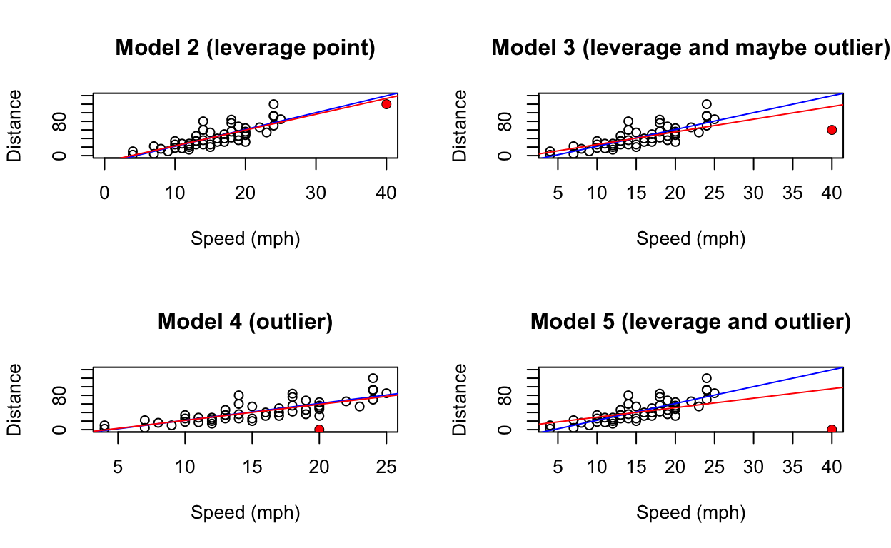

Introduction
Welcome to Module 6: Visualising Problematic Observations. In this module:
Use R to display different simple linear models and highlight individual observations.
Use R to fit linear models on subsets of the data.
Describe the difference between leverage, outlier, and influential points in terms of their data values.
Describe the difference between leverage, outlier, and influential points in terms of their impact on the estimated regression line.
Remember that if you get stuck on a coding exercise, you can click the Hints button for help!
Motivation
In this module, we will explore how and when different types of problematic point influence regressions estimates/coefficients. Through exercises, we will add individual data points representing the types of problematic points to our data set, allowing us to infer which and when certain datapoints appear to change our estimates.
By visualising linear models with and without suspected problematic points, we can identify the type of problematic point.
Section 0: Exploratory Data Analysis
We will attach the dataset and look at the summary and dimension of this dataset. This will tell us the centre and spread of each variable, as well as how many observations we have and in which column of the data each variable is stored.
For context, we will be using the dataset “cars” contained in R. This dataset includes two variables:
- Speed (mph): speed that a car was travelling prior to stopping
- Distance: the distance until the car arrived at a complete stop.
Descriptive Statistics
# load the dataset "car"
attach(cars)#---
# you can use the function "summary()" to get some statistics about your dataset
#---summary(cars)#---
# you can use the function "dim()" to get the dimension of your dataset "cars"
#---dim(cars)The regression
Now that we’ve examined the summary and dimensions of the ‘cars’ dataset, we’re ready to explore the relationship between Speed (X) and Distance (Y). Let’s first fit a linear regression to estimate how speed affects distance.
To proceed, please fill in the blanks of the following code and run the regression.model1 <- lm( ~ , data = )
summary(model1)#---
# you can use lm(response variable ~ predictor, data = the name of your dataset) to fit a simple linear regression between your predictor and response variable
#---#---
# you can use the function "summary" to view your summary of your linear regression
#---
# you can use lm(response variable ~ predictor, data = the name of your dataset) to fit a simple linear regression between your predictor and response variable
#---model1 <- lm(dist ~ speed, data = cars)
summary(model1)Another way to observe (visualise) the association between two variables is through a scatterplot. After fitting a simple linear regression between Speed (X) and Distance (Y), we can improve our understanding by plotting these variables and overlaying the estimated regression line on the graph.
ggplot() +
geom_point(data = cars, aes(x = "[insert x-variable]", y = "[insert y-variable]")) +
geom_abline(intercept = "[insert intercept from the regression model]", slope ="[insert slope from the regression model]", col = "blue")
labs(x = "Speed",y ="Distance", title = "Figure 1. The Association between Speed and Distance")#---
# Which variable should be the independent variable and
# which one should be the dependent variable in your scatterplot?
#---#---
# You can extract the estimated intercept and slope and use them as intercept and slope
# inside of the "geom_abline" function to add your estimated linear regression to the scatterplot
#---
# Which variable should be the independent variable and
# which one should be the dependent variable in your scatterplot?
#---#---
# The coef(model name) gives both estimated intercept and slope,
# so you can use index to extract estimated intercept and slope individually
#---
# You can extract the estimated intercept and slope and use them as intercept and slope
# inside of the "geom_abline" function to add your estimated linear regression to the scatterplot
#---
# Which variable should be the independent variable and
# which one should be the dependent variable in your scatterplot?
#---ggplot() +
geom_point(data = cars, aes(x = speed, y = dist))+
geom_abline(intercept = coef(model1)[1], slope = coef(model1)[2], col = "blue")+
labs(x = "Speed",y ="Distance", title = "Figure 1. The Association between Speed and Distance")Section 1: Leverage Points
The first kind of problematic observation to identify is called a leverage point. It is loosely defined as an observation that is extreme or unusual from the rest of the data because it has an abnormally large or small value of the predictor.
Let’s visualize this type of observation by changing one of our observations to make it a leverage point. Since the dataset has Speed in column 1 and Distance in column 2, we will need to be sure we assign the right values in the right places.
Create a new row (row 51) in cars by assigning a new Speed measurement of 40 and a new Distance measurement of 120.
# assign row 51 a value of 40 and 120
cars[51, ] <- #---
# data Speed is in column 1 and Distance is in column 2
#---#---
# Use a vector to assign values
#---
# data Speed is in column 1 and Distance is in column 2
#---cars[51,] <- c(40, 120)Next, fit a new linear model using speed as predictor and dist as response using our updated data. Make a scatterplot of these variables and add two regression lines to this plot:
- a blue line that represents the original regression relationship (recall that this information was stored in model1).
- a red line that represents the new regression relationship.
# fit the linear regression relationship with updated dataset cars
model2 <- lm( ~ , data=)
# view the summary of the fitted model2
summary()
# view the summary of the fitted model1
summary()#---
# Remember, Distance is the y-variable and speed is the x-variable
#---# fit the linear regression relationship with updated dataset cars
model2 <- lm(dist ~ speed, data=cars)
# view the summary of the fitted model2
summary(model2)
# view the summary of the fitted model1
summary(model1)ggplot() +
geom_point(data = cars, aes(x = speed, y = dist))+
geom_point(aes(x = "[insert x-variable]", y = "[insert y-variable]"), col = "red") +
geom_abline(intercept = coef(model1)[1], slope = coef(model1)[2], col = 'blue') +
annotate("text",x = 30,y = 70,label="Fitted linear regression \n using the updated dataset", col = "red")+
geom_abline(intercept = "replace here by your answers", slope = "replace here by your answers", col = 'red') +
annotate("text",x = 22.5,y = 102,label = "Fitted linear regression \n using the original dataset", col = "blue")+
labs(x = "Speed",y ="Distance", title = "Figure 1. The Association between Speed and Distance")#---
# Use the geom_point function to highlight the observation on row 51
#---#---
# Extract the estimated intercept and slope from the new model (model2)
# and put them in the right places inside of the function geom_abline
#---
# Use the geom_point function to highlight the observation on row 51
#---ggplot() +
geom_point(data = cars, aes(x = speed, y = dist))+
geom_point(aes(x = cars$speed[51], y = cars$dist[51]), col = "red") +
geom_abline(intercept = coef(model1)[1], slope = coef(model1)[2], col = 'blue') +
annotate("text",x= 30,y= 70,label="Fitted linear regression \n using the updated dataset", col="red")+
geom_abline(intercept = coef(model2)[1], slope = coef(model2)[2], col = 'red') +
annotate("text",x=22.5,y=102,label="Fitted linear regression \n using the original dataset", col="blue")+
labs(x = "Speed",y ="Distance", title = "Figure 1. The Association between Speed and Distance")Let’s modify observation 51 again, but this time assign it a Speed of 40 and a Distance of 60. Repeat the process of fitting a new estimated regression relationship and plotting this relationship on a scatterplot.
# assign row 51 a value of 40 and 60
cars[51,] <- #---
# data Speed is in column 1 and Distance is in column 2
#---# assign observation 51 a speed of 40 and a distance of 60
cars[51,] <- c(40, 60)# fit the linear regression relationship and view the summary
model3 <- lm( "replace here by your answer" ~ "replace here by your answer", data=cars)
summary(model3)
# Also show the summary of model1 where we used the original dataset to fit the model
summary("replace here by your answer")#---
# "dist" is the response variable and "speed" is the predictor
#---#---
# we used the original dataset to fit the first model, and named it "model1"
#---
# "dist" is the response variable and "speed" is the predictor
#---# fit the linear regression relationship and view the summary
model3 <- lm(dist ~ speed, data=cars)
summary(model3)
# show the summary of model1 as well
summary(model1)ggplot() +
geom_point(data = cars, aes(x = speed, y = dist))+
geom_point(aes(x = "replace here by your answer", y = "replace here by your answer"), col = "red") +
geom_abline(intercept = coef(model1)[1], slope = coef(model1)[2], col = 'blue') +
annotate("text",x = 30,y = 70,label="Fitted linear regression \n using the updated dataset", col = "red")+
geom_abline(intercept = "replace here by your answer", slope = "replace here by your answer", col = 'red') +
annotate("text",x = 22.5,y = 102,label = "Fitted linear regression \n using the original dataset", col = "blue")+
labs(x = "Speed",y ="Distance", title = "Figure 1. The Association between Speed and Distance")#---
# Use geom_point function to highlight the observation on row 51
#---#---
# Extract the estimated intercept and slope from the new model (model3)
# and put them in the right places inside of the function geom_abline
#---
# Use geom_point function to highlight the observation on row 51
#---ggplot() +
geom_point(data = cars, aes(x = speed, y = dist))+
geom_point(aes(x = cars$speed[51], y = cars$dist[51]), col = "red") +
geom_abline(intercept = coef(model1)[1], slope = coef(model1)[2], col = 'blue') +
annotate("text",x= 34,y= 70,label="Fitted linear regression \n using the updated dataset", col="red")+
geom_abline(intercept = coef(model3)[1], slope = coef(model3)[2], col = 'red') +
annotate("text",x=22.5,y=102,label="Fitted linear regression \n using the original dataset", col="blue")+
labs(x = "Speed",y ="Distance", title = "Figure 2. The Association between Speed and Distance")Both of the observations we looked at were leverage points because their predictor values were very different from most of the other data points (especially far from the average predictor value).
However, only one of them significantly changed the regression line that we calculated from the data.
This tells us that while not all leverage points directly affect how we estimate the regression relationship, they all possess the potential to do so, particularly when they also serve as outliers. Leverage points have a high influence on the estimation of regression coefficients due to their position in the data space, but their impact becomes especially pronounced if they deviate significantly from the model’s predicted values, thereby becoming outliers.
In essence, understanding leverage points necessitates considering not just their position or leverage but also their potential to be outliers!
Therefore, it is crucial to recognize that leverage points and outliers are not mutually exclusive concepts but are interrelated aspects that together shape the accuracy and interpretation of regression analyses.
As we transition to a focused discussion on outliers, it is important to keep this in mind.
Section 2: Outlier Points
You are probably familiar with the concept of a statistical outlier. In linear regression, we use the term outlier to denote a very specific type of extreme/unusual observation in our data. An outlier is an observation that that deviates significantly from the regression pattern observed in the rest of the data. This often means that the response value is significantly higher or lower than what we typically see in the data.
In this section, we will visualize the impact of outlier points on the estimated regression relationship between Speed (X) and Distance (Y). Since we already fit a model to the unmodified data earlier (model 1), we will jump to modifying a single observation to visualize the impact to this regresstion relationship.
First, we will assign our observation 51 a Speed value of 20 and a Distance value of 0. Then we will fit a linear regression model and add this estimated relationship to a scatterplot along with the relationship from model 1.
# assign row 51 a value of 20 and 0
cars[51,] <- #---
# data Speed is in column 1 and Distance is in column 2
#---# assign observation 51 a speed of 20 and a distance of 0
cars[51,] <- c(20, 0)# fit the linear regression relationship and view the summary
model4 <- lm( "replace here by your answer" ~ "replace here by your answer", data=cars)
summary(model4)
# Also show the summary of model1 where we used the original dataset to fit the model
summary("replace here by your answer")#---
# "dist" is the response variable and "speed" is the predictor
#---#---
# we used the original dataset to fit the first model, and named it "model1"
#---
# "dist" is the response variable and "speed" is the predictor
#---# fit the linear regression relationship and view the summary
model4 <- lm(dist ~ speed, data=cars)
summary(model4)
# show the summary of model1 as well
summary(model1)ggplot() +
geom_point(data = cars, aes(x = speed, y = dist))+
geom_point(aes(x = "replace here by your answer", y = "replace here by your answer"), col = "red", pch = 20) +
geom_abline(intercept = coef(model1)[1], slope = coef(model1)[2], col = 'blue') +
annotate("text",x = 18,y = 25, label="Fitted linear regression \n using the updated dataset", col = "red")+
geom_abline(intercept = "replace here by your answer", slope = "replace here by your answer", col = 'red') +
annotate("text",x = 19, y = 80, label = "Fitted linear regression \n using the original dataset", col = "blue")+
labs(x = "Speed",y ="Distance", title = "Figure 1. The Association between Speed and Distance")#---
# Use geom_point function to highlight the observation on row 51
#---#---
# Extract the estimated intercept and slope from the new model (model4)
# and put them in the right places inside of the function geom_abline
#---
# Use geom_point function to highlight the observation on row 51
#---ggplot() +
geom_point(data = cars, aes(x = speed, y = dist))+
geom_point(aes(x = cars$speed[51], y = cars$dist[51]), col = "red", pch = 20) +
geom_abline(intercept = coef(model1)[1], slope = coef(model1)[2], col = 'blue') +
annotate("text",x= 18,y= 25,label="Fitted linear regression \n using the updated dataset", col="red")+
geom_abline(intercept = coef(model4)[1], slope = coef(model4)[2], col = 'red') +
annotate("text",x=19,y=80,label="Fitted linear regression \n using the original dataset", col="blue")+
labs(x = "Speed",y ="Distance", title = "Figure 1. The Association between Speed and Distance")Now, we will set observation 51 to have a speed value of 40 and a distance value of 0. Then, draw the same plot again, with the original relationship from Model 1 and the new relationship we obtain using this new value.
# assign row 51 a value of 40 and 0
cars[51,] <- #---
# data Speed is in column 1 and Distance is in column 2
#---# assign observation 51 a speed of 40 and a distance of 0
cars[51,] <- c(40, 0)# fit the linear regression relationship and view the summary
model5 <- lm( "replace here by your answer" ~ "replace here by your answer", data=cars)
summary(model5)
# Also show the summary of model1 where we used the original dataset to fit the model
summary("replace here by your answer")#---
# "dist" is the response variable and "speed" is the predictor
#---#---
# we used the original dataset to fit the first model, and named it "model1"
#---
# "dist" is the response variable and "speed" is the predictor
#---# fit the linear regression relationship and view the summary
model5 <- lm(dist ~ speed, data=cars)
summary(model5)
# show the summary of model1 as well
summary(model1)ggplot() +
geom_point(data = cars, aes(x = speed, y = dist))+
geom_point(aes(x = "replace here by your answer", y = "replace here by your answer"), col = "red", pch = 20) +
geom_abline(intercept = coef(model1)[1], slope = coef(model1)[2], col = 'blue') +
annotate("text",x = 20, y = 25, label="Fitted linear regression \n using the updated dataset", col = "red")+
geom_abline(intercept = "replace here by your answer", slope = "replace here by your answer", col = 'red') +
annotate("text",x = 15, y = 82, label = "Fitted linear regression \n using the original dataset", col = "blue")+
labs(x = "Speed",y ="Distance", title = "Figure 2. The Association between Speed and Distance")#---
# Use geom_point function to highlight the observation on row 51
#---#---
# Extract the estimated intercept and slope from the new model (model5)
# and put them in the right places inside of the function geom_abline
#---
# Use geom_point function to highlight the observation on row 51
#---ggplot() +
geom_point(data = cars, aes(x = speed, y = dist))+
geom_point(aes(x = cars$speed[51], y = cars$dist[51]), col = "red", pch = 20) +
geom_abline(intercept = coef(model1)[1], slope = coef(model1)[2], col = 'blue') +
annotate("text",x= 20,y= 25,label="Fitted linear regression \n using the updated dataset", col="red")+
geom_abline(intercept = coef(model5)[1], slope = coef(model5)[2], col = 'red') +
annotate("text",x=15,y=82,label="Fitted linear regression \n using the original dataset", col="blue")+
labs(x = "Speed",y ="Distance", title = "Figure 2. The Association between Speed and Distance")Both of the observations we created in the data were outlier points as they had unusual/extreme values of their response measurement (distance). However, like before, only one of the two observations had a noticeable impact on the estimated regression relationship, and this observation happened to be located farther from the mean of Speed than the other. Both observations however did yield large standard errors of the regression coefficients. This tells us that some outlier points impact the estimated regression relationship strongly, but all increase the standard error of the estimated coefficients.
In our next discussion, we’ll explore how observations that significantly impact an estimated coefficient, the overall estimated regression relationship, or a specific fitted value are classified as influential observations.
Section 3: Influential Points
The last type of observation that is considered problematic in linear regression is an influential point. There are 3 ways in which an observation can be influential:
- it influences ALL the estimated coefficients of the regression, influencing the model fit overall
- it influences at least one but not all estimated coefficients of the regression relationship
- it influences its own predicted/fitted value
Through a comparative analysis, all 3 of these types of influential observations can be detected by looking at a model in which this observation was used in estimating the relationship (e.g. Models 2, 3, 4 and 5) and comparing aspects of this model to one where this observation was NOT used to estimate the relationship (e.g. Model 1).
In this section, we will visualize the impact of each these influential points by again reviewing the observations we modified in our dataset and comparing the results back to Model 1.
Influential on an Estimated Coefficient
The first type of influential observation we will look at is one that is influential on at least one \(\hat{\beta}_j\).

To verify whether each point is this type of influential observation, we need to compare the estimated slope from Model 1 with the estimated slope in each other model, while adjusting for how much variability in the estimated slope we expect from the sampling distribution. This standard error (representing sampling variability) is given to us in our summary output for a model.
In the below code chunk, extract 3 pieces of information from the model summaries we have already used: - the estimated slope from Model 1 - the standard error for the estimated slope from Model 5 - the estimated slope from Model 5.
We will then compare the slopes by taking their difference and standardizing by the standard error (i.e. \(\frac{\hat{\beta}_{Model5} - \hat{\beta}_{Model1}}{SE(\hat{\beta}_{Model5})}\)). This is the same process as computing a z-score:
# extract the estimated slope from Model 1
beta1 <- coef(model1)[2]
# extract the estimated slope from Model 5
beta5 <-
# extract the standard error of the slope from Model 5
se5 <- summary(model5)$coefficients[ , ]
# standardize the slope from Model 5 according to above
(beta5 - beta1)/se5# use "coef" function to extract coefficient estimate on model5# the standard error of the slope from Model 5 is stored in a matrix# extract the estimated slope from Model 1
beta1 <- coef(model1)[2]
# extract the estimated slope from Model 5
beta5 <- coef(model5)[2]
# extract the standard error of the slope from Model 5
se5 <- summary(model5)$coefficients[2,2]
# standardize the slope from Model 5 according to above
(beta5 - beta1)/se5Do the same process for Models 2, 3, and 4 to determine whether there is an unusually large difference between the estimated slopes of Models 2, 3 and 4 compared to Model 1 (i.e. \(\frac{\hat{\beta}_{Modelj} - \hat{\beta}_{Model1}}{SE(\hat{\beta}_{Modelj})}\) for each model j = 2, 3, 4).
beta2 <- coef(model2)[ ]
se2 <- summary(model2)$coefficients[ , ]
(beta2 - beta1)/se2# use the right index to extract coefficient estimate on model2# Remember we want to isolate coefficients and dimension/content of what is stored.
# So please use the right index to extract the standard deviation on model5# extract the slope and standard error for Model 3 and compute the `z-score'
beta2 <- coef(model2)[2]
se2 <- summary(model2)$coefficients[2,2]
(beta2 - beta1)/se2beta3 <-
se3 <-
(beta3 - beta1)/se3# use "coef" function and the right index to extract coefficient estimate on model3# Remember we want to look in the model sumary and the coefficents "box."# extract the slope and standard error for Model 3 and compute the `z-score'
beta3 <- coef(model3)[2]
se3 <- summary(model3)$coefficients[2,2]
(beta3 - beta1)/se3beta4 <-
se4 <- # use "coef" function and the right index to extract coefficient estimate on model3# Remember we want to look in the model sumary and the coefficents "box."# Please check the formula above R chunck to compute the "z-score."# extract the slope and standard error for Model 3 and compute the `z-score'
beta4 <- coef(model4)[2]
se4 <- summary(model4)$coefficients[2,2]
(beta4 - beta1)/se4Based on these results, we see that Model 5 (and to a lesser degree Model 4) each have a change in their slope (compared to Model 1) that appears to be unusually large/small (more than 2 standard errors). While we don’t formally use the Empirical Rule to decide which observations create a substantial change in the estimated coefficients, the overall principle is similar:
- find the difference in the model estimates between a model with all the observations (model 2, 3, 4 or 5) and a model with one observation removed (model 1)
- scale this difference using the standard error of the estimated coefficient in the larger model to account for expected variation between samples
- use a specified cutoff/threshold to determine whether this scaled difference in estimates is too large and indicates the model estimate changed substantially due to this one observation.
We could use this same process for the intercept as well, to determine whether any one observations influences the estimate of the intercept substantially. We will see a similar process for the next type of influential observations.
Influential on its own Prediction
The next type of influential observation is one that is influential on its own fitted/predicted value \(\hat{y}_i\). This means that an observation that is influential in this way will provide a predicted value for itself in one model (e.g. Model 5) that is very different than a predicted value for itself from a model in which this observation was not used to fit the model (e.g. Model 1).
To begin, we can review our 5 models again (model 1 is the blue line in each plot, and the red line corresponds to each new model we fit by adding a new observation):

Recall that a predicted/fitted value for an observation uses the same value of the predictor as the observation we are predicting for, but provides a response value equal to where that observation falls on the estimated regression surface.
Since it’s difficult to visualize from inspection of graphs, we can conduct a similar process to locating observations that substantially change the estimated slope. For this, we again need 3 pieces of information from our models:
- the fitted/predicted value for our observation using a model where this observation was used (e.g. Models 2, 3, 4, 5)
- the fitted/predicted value for our observation using a model where this observation was NOT used (i.e. Model 1)
- the standard error in this prediction/fitted value from the model where this observation was NOT used (i.e. Model 1)
All of these components are not directly found in the summary of the fitted model, but rather require that we use the predict() function to extract them. To review the syntax of this function, see this walkthrough: https://www.digitalocean.com/community/tutorials/predict-function-in-r. We will require that the function report the standard errors as well, by adding an option to the function se.fit=TRUE.
Here is an example of how this should be done.
# for model 2, our Speed value was 40
new <- data.frame(speed = 40)
# use "predict" function to get a prediction of the distance when the speed is 40
# (using the estimated coefficients of Model 2)
yhat2 <- predict(model2, new)
# get all prediction info from Model 1
p1 <- predict(model1, new, se.fit=T)
# extract the predicted value for the distance when the speed is 40 using model 1
yhat1 <- p1$fit
# extract the standard error
se1 <- p1$se.fit
# look at the values we have
c(yhat1, yhat2, se1)## 1 1
## 139.71726 133.48905 10.45046To compare the predictions from both Model 1 and Model 2 above while taking into account the expected variation in predictions, we will compute the difference (Model 2 - Model 1) and divide by the standard error. We can compare this as well to the Empirical Rule.
# take the difference between prediction in Model 2 to Model 1, divide by SE
(yhat2 - yhat1)/se1## 1
## -0.5959741Now let’s do the same thing for the remaining models and the observation we created for each.
- In Model 3, speed was set to 40
- In Model 4, speed was set to 20
- In Model 5, speed was set to 40
# create the data frame containing X values we wish to predict at
new1 <- data.frame(speed = 40)
new2 <-
# find the standardized difference in predictions for model 3
p1 <- predict("replace here by your answer", "replace here by your answer", se.fit=T)
yhat1 <- p1$fit
se1 <- p1$se.fit
yhat3 <- predict(model3, new1)
(yhat3 - yhat1)/se1 # follow the code "new1 <- data.frame(speed = 40)" to create a new dataframe with speed equal to 20,
# and save it under the variable new2.# p1 <- predict("replace here by your answer", "replace here by your answer", se.fit=T)
# We want to predict using model1 here, and to match the observation to what was used for model3# create the data frame containing X values we wish to predict at
new1 <- data.frame(speed = 40)
new2 <- data.frame(speed = 20)
# find the standardized difference in predictions for model 3
p1 <- predict(model1, new1, se.fit=T)
yhat1 <- p1$fit
se1 <- p1$se.fit
yhat3 <- predict(model3, new1)
(yhat3 - yhat1)/se1# find the standardized difference in predictions for model 4
p1 <- predict(model1, new2, se.fit=T)
yhat1 <- p1$fit
se1 <- p1$se.fit
yhat4 <- predict("replace here by your answer", "replace here by your answer")
(yhat4 - yhat1)/se1# We are using model4 and predicting for speed = 20# find the standardized difference in predictions for model 4
p1 <- predict(model1, new2, se.fit=T)
yhat1 <- p1$fit
se1 <- p1$se.fit
yhat4 <- predict(model4, new2)
(yhat4 - yhat1)/se1# find the standardized difference in predictions for model 5
p1 <- predict("replace here by your answer", "replace here by your answer", "replace here by your answer")
yhat1 <- p1$fit
se1 <- p1$se.fit
yhat5 <- predict(model5, new1)
"replace here by your answer"# We are predicting speed = 40 using model1# Be sure we are also calculating standard errors on prediction# Refer to the ealier in the code chunk for an example # find the standardized difference in predictions for model 5
p1 <- predict(model1, new1, se.fit=T)
yhat1 <- p1$fit
se1 <- p1$se.fit
yhat5 <- predict(model5, new1)
(yhat5 - yhat1)/se1Based on these results and using the Empirical rule as a guide to define unusual differences, we see that for Models 3 and 5, we have relatively large differences in the predictions for our red observations depending on whether or not that observation was used to fit the model. Again, when we are formally detecting this type of influential observation, we do not use the Empirical Rule, but rather a more strict cutoff value, so in reality, all 4 red observations are influential observations for their respective models. The process for detecting observations that are influential on their own prediction is the same as what we did here:
- find the difference in the prediction of this observation between a model with all the observations used (model 2, 3, 4 or 5) and a model with this observation removed (model 1)
- scale this difference using the standard error of the prediction in the smaller model to account for expected variation between samples
- use a specified cutoff/threshold to determine whether this scaled difference in predictions is too large and indicates the model prediction for this observation changed substantially because of this observation.
Our final type of influential observation will also look at differences between a model that uses ALL the observations and one that removes a single observation to understand the impact that this removed observation has on the overall fit of the model.
Influential on the Estimated Relationship Overall
The final type of influential observation is one that influences the entire estimated regression relationship substantially, rather than a single aspect of it (e.g. a single estimated coefficient or single predicted value). It’s common to have observations that are classified as at least one of the other two influential types, but won’t be influential overall. This is because the impact that a single observation would have to be very large in order to have an overall impact on the estimated relationship.
Let’s visualize our 5 models again, and 4 observations (highlighted in red) that represent different kinds of problematic points.
Since, as before, it is difficult to confidently identify these types of influential points by graphical inspection, we can compare the differences between a model that uses this observation to estimate the relationship to a model that does not use the observation. However, the process we use for this comparison will be different than the previous two influential points. In this case, we will be comparing sums of squares representing different sources of variability in order to decide if an observation is influential in this way.
A. If \(Y_1\) and \(Y_2\) are both independent Normal random
variables, then \(Y_1 - Y_2\) must also
be a Normal random variable.
B. If we have \(n\) independent and
identically distributed Normal random variables \(Y_i\), then \(\sum_{i=1}^{n}Y_i^2\) will be a Chi-squared
random variable.
C. If we have that \(Y_1\) is a
Chi-square random variable with degrees of freedom \(n\), and \(Y_2\) is a Chi-square random variable with
degrees of freedom \(m\), then \(\frac{\frac{Y_1}{n}}{\frac{Y_2}{m}}\)
follows an F distribution.
D. More than one of these statements is true.
Based on the theory of linear regression models, this tells us that we can compare two different sources of variation to each other, as long as we adjust/standardize them by their degree of freedom. By creating a ratio of variation in the fitted values between the two models and variation we expect from our observations around the regression relationship, we get a measure that tells us how much more variable the two models are in their fitted values due to one observation compared to what would be expected as natural variability.
To evaluate the differences we observe in ALL fitted values of our model that are due to the presence of a single observation based on the amount of variation we expect in our observations around the regression relationship, we need to extract 3 sets of information: - predicted values for all 51 observations (including the red one) from Model 1 - predicted values for all 51 observations (including the red one) from Model 5 - the estimated error variance from Model 5
By taking a ratio of sum of squares we can say that ratios that seem large tell us that the differences in fitted values from the two models are abnormal relative to the amount of expected variation around the regression relationship. We can see how this works below:
# the data for Model 5
cars[51,] <- c(40,0)
# get predictions for all 51 observations from model 5
p5 <- predict(model5, as.data.frame(cars))
# get predictions for all 51 observations from model 1
p1 <- predict(model1, as.data.frame(cars))
# extract estimated error variance from model 5
errorvar5 <- summary(model5)$sigma^2Now we can decide whether our red observation from Model 5 (observation 51) is this kind of influential point by finding the ratio \(\frac{\sum(p5 - p1)^2}{2s^2}\), where the 2 corresponds to the degrees of freedom from the squared difference of fitted values in the numerator.
# find the ratio of sums of squares
sum((p5 - p1)^2)/(2*errorvar5)## [1] 6.11421Let’s compute the same ratio for our other models (models 2, 3 and 4). Remember that we need:
- to use the data that matches whichever of models 2, 3 or 4 we are looking at
- to get predictions on all observations in this data in both model 1 and whichever of model 2, 3, or 4 we are working with
- to extract the estimated error variance from whichever of model 2, 3, or 4 we are working with
##### identifying observation 51 for model 2
# make sure we have the right data
cars[51,] <- c(40, 120)
# extract predictions for this data in model 1 and model 2
p1 <- predict(model1, as.data.frame(cars))
p2 <- predict(model2, "replace here by your answer")
# extract error variance from model 2
errorvar2 <- summary(model2)$"replace here by your answer"
# compute the ratio
sum((p2-p1)^2)/(2*errorvar2)# We want a prediction for all observations in the data# sigma is stored as "sigma" and should be squared##### identifying observation 51 for model 2
# make sure we have the right data
cars[51,] <- c(40, 120)
# extract predictions for this data in model 1 and model 2
p1 <- predict(model1, as.data.frame(cars))
p2 <- predict(model2, as.data.frame(cars))
# extract error variance from model 2
errorvar2 <- summary(model2)$sigma^2
# compute the ratio
sum((p2-p1)^2)/(2*errorvar2)##### identifying observation 51 for model 3
# make sure we have the right data
cars[51,] <- c(40,60)
# extract predictions for this data in model 1 and model 3
p1 <-
p3 <-
# extract error variance from model 3
errorvar3 <-
# compute the ratio
##### identifying observation 51 for model 4
# make sure we have the right data
cars[51,] <- c(20,0)
# extract predictions for this data in model 1 and model 4
p1 <-
p4 <-
# extract error variance from model 4
errorvar4 <-
# compute the ratio# Refer to the previous R chunk and follow the same procedure to complete this question##### identifying observation 51 for model 3
# make sure we have the right data
cars[51,] <- c(40,60)
# extract predictions for this data in model 1 and model 3
p1 <- predict(model1, as.data.frame(cars))
p3 <- predict(model3, as.data.frame(cars))
# extract error variance from model 3
errorvar3 <- summary(model3)$sigma^2
# compute the ratio
sum((p3-p1)^2)/(2*errorvar3)
##### identifying observation 51 for model 4
# make sure we have the right data
cars[51,] <- c(20,0)
# extract predictions for this data in model 1 and model 4
p1 <- predict(model1, as.data.frame(cars))
p4 <- predict(model4, as.data.frame(cars))
# extract error variance from model 4
errorvar4 <- summary(model4)$sigma^2
# compute the ratio
sum((p4-p1)^2)/(2*errorvar4)Based on the previous results, it seems as if our red observations in Models 3 and 5 were influential on the overall estimation of the regression relationship. An influential point can be influential in any or all of the three ways we’ve discussed, and an influential point can also be an outlier and/or a leverage point as well, but will not necessarily have to be leverage or outlier. What we have seen is that the chances that an observation is deemed influential in at least one way increases if that observation seems quite distant from the X information (i.e. a leverage point) and also does not seem to follow the trend of the remaining data (i.e. outlier).
The purpose of identifying these observations is so that we better understand whether we could be obtaining an estimated relationship between X and Y that may be influenced by one or a small handful of observations. We do not correct these but rather we note them as a limitation, since we understand that in a different sample of data that did not include these observations, we may have estimated a different relationship.
Section 4: Interactive Exercise
In this section, we will use the interactive plot to not only visualise problematic points, but also see how they influence regression coefficients.
Leverage point, Outlier point, or both?
Concept Check:
Recall a point is considered to have high leverage if it has an extreme x-value. Additionally, it’s important to keep in mind that “extreme” can also be refer to a x-value that is far from the main cluster/cloud of data points in the predictor space.
Recall a point is considered an outlier if the response y deviates fromt the general trend of the rest of the data.
The interactive plot below allows you to toggle the x and y-value of the red point. The purporse of this exercise is to see how the presence of the red point influences the regression coefficients and when to categorise it as a type of problematic point.
Interactive Plot
With the default addition of the red point at (15,40), our regression coefficients are minimally impacted. This is because the corresponding x and y value of the red point fall not only within the domain and range of the original data, but also don’t really differ from the original points (blue). In other words, you could think of the point as being part of the original data.
Did you know that a problematic point can present itself as both an outlier and leverage point?
Wrap-Up
Congratulations – You have successfully completed this learning module! By now, you should be familiar with the following notions and their applications using R:
Leverage Points: Comprehend the concept of leverage as it relates to data points that have the potential to disproportionately influence the slope of the regression line due to their position in the data distribution.
Outliers: Identify outliers based on their deviation from the expected data pattern or trend. Understanding outliers involves recognizing their presence and evaluating their impact on the overall data analysis.
Influential Points: Distinguish influential points by their ability to significantly alter the estimated regression line. This involves an appreciation of how these points, through their leverage or outlying nature, can affect the conclusions drawn from the linear model analysis.
Understanding The Difference: These three notions can be distinguished both relative to their data points as well to their respective impact on the regression line. Leverage points are characterized by their extreme values in the predictor variables, potentially skewing the regression line’s slope even if their response values are within a normal range. Outliers, on the other hand, have response values that significantly deviate from the pattern predicted by the model, affecting the regression line’s accuracy if not identified and handled appropriately. Influential points are a broader category that may include both high leverage points and outliers; these are data points that, due to their unique position or value, significantly affect the regression model’s parameters
Interrelationship of Leverage and Outliers: Lastly, it’s crucial to recognize that leverage and outliers are not necessarily mutually exclusive concepts. In certain instances, a data point can simultaneously possess high leverage and be an outlier. This dual nature means that when a data point with higher leverage (making it a leverage point) also deviates significantly from the expected outcome (making it an outlier as well), it can have an amplified effect on the analysis.